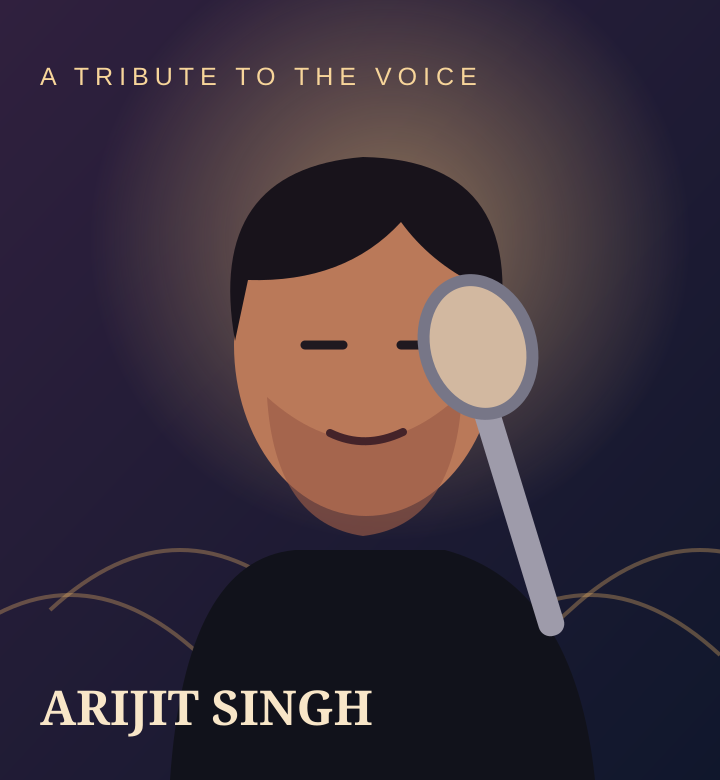

Expressive vocals
His performances are known for emotional depth and an instantly recognizable tone.
From soulful ballads to unforgettable film songs, Arijit Singh has become one of the most recognizable voices in contemporary Indian music. Explore his journey and some of his beloved songs.
Discover his storyExplore top songs
His performances are known for emotional depth and an instantly recognizable tone.
His songs appear across romantic dramas, energetic soundtracks, and intimate acoustic moments.
Listeners return to his music for celebrations, quiet evenings, and everything in between.